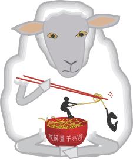

Conference venue
QCRYPT 2012 will take place September 10-14, 2012 on the campus of the National University of Singapore at the Shaw Foundation Alumni House.
How to get there
From the Link Hotel
We organized a shuttle bus from the Link Hotel
| From Hotel to Conference | From conference to hotel | |
|---|---|---|
| Monday | 08:10 | 19:00 |
| Tuesday | 08:10 | 20:30 |
| Wednesday | 08:10 | 14:00 |
| Thursday | 08:10 | 17:30 |
| Friday | 08:10 | 15:00 |
From the Bay Hotel
- Cross the highway, and walk towards the bus stop on your right.
- Take a bus 10, 30, 30e or 143. They are all direct bus to Shaw Alumni Foundation. Alight at the bus stop Opp Heng Mui Keng Terr (#16061). (25 minutes bus ride)
- Cross the street and take Heng Mui Teng Terrace
- When you arrive on campus, turn left. The Shaw Alumni Foundation is second building on your right
Conference dinner and rump session
The conference dinner and the rump session will take place on Sentosa Island. Learn more…
Conference map
View the QCrypt 2012 map directly into Google maps.
